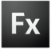

Adobe Flex
Dieser Artikel wurde für die folgenden Ubuntu-Versionen getestet:
Dieser Artikel ist mit keiner aktuell unterstützten Ubuntu-Version getestet! Bitte diesen Artikel testen und das getestet-Tag entsprechend anpassen.
Zum Verständnis dieses Artikels sind folgende Seiten hilfreich:

Adobe Flex  ist ein quelloffenes Software Development Kit (SDK) zum Erstellen von Rich Internet Applications (RIAs). Es wurde ursprünglich 2004 von Macromedia veröffentlicht. Im Jahre 2005 wurde Macromedia von Adobe aufgekauft, und 2008 wurde die Version Flex 3 SDK herausgegeben. Im Gegensatz zum hier beschriebenen Flex SDK sind die Laufzeitumgebung Adobe Flash Player und die Entwicklungsumgebung Adobe Flex Builder weiterhin proprietäre Produkte von Adobe.
ist ein quelloffenes Software Development Kit (SDK) zum Erstellen von Rich Internet Applications (RIAs). Es wurde ursprünglich 2004 von Macromedia veröffentlicht. Im Jahre 2005 wurde Macromedia von Adobe aufgekauft, und 2008 wurde die Version Flex 3 SDK herausgegeben. Im Gegensatz zum hier beschriebenen Flex SDK sind die Laufzeitumgebung Adobe Flash Player und die Entwicklungsumgebung Adobe Flex Builder weiterhin proprietäre Produkte von Adobe.
Eine Alternative zum Adobe Flex SDK wäre die freie Plattform OpenLaszlo, deren Weiterentwicklung allerdings stagniert. Die Entwicklung anderer Alternativen wie Microsoft Silverlight bzw. deren quelloffenes Gegenstück für Linux, Moonlight, wurden eingestellt.
Zwischenzeitlich hat Adobe das Projekt an die Apache Foundation übergeben. Die neue Homepage lautet daher flex.apache.org  .
.
Voraussetzungen¶
Java ist installiert.
Ein Flash Player zum Abspielen von Flash Dateien (.swf) ist installiert, siehe Adobe Flash oder Gnash.
Installation von Adobe Flex SDK¶
Hinweis!
Fremdpakete können das System gefährden.
Herunterladen des aktuellen Flex SDK

Entpacken in ein temporäres Verzeichnis [2]
Verschieben der entpackten Dateien von dem temporären Verzeichnis in das neu erstellte Flex-Verzeichnis /opt/flex/
Hinzufügen des Pfades in das Bash-Profil. Dazu das die Datei ~/.bashrc mit einem Editor öffnen [3] und am Ende folgende Zeile hinzufügen:
1
export PATH=/opt/flex/bin:$PATH
Zum Abschluss noch die Ausführungsrechte setzen [4]:
chmod 755 /opt/flex/bin/mxmlc
Wenn alles geklappt hat, zeigt folgender Aufruf des Flex Compilers die Hilfe an.
mxmlc --help
Test¶
Zum Test kann man folgende kleine Flex-Applikation (von hier ) in eine Datei button.mxml kopieren,
1 2 3 4 5 6 7 | <?xml version="1.0" encoding="utf-8"?> <mx:Application xmlns:mx="http://www.adobe.com/2006/mxml" horizontalAlign="center" verticalAlign="center"> <mx:Button id="myButton" label="I'm a button!" /> </mx:Application> |
in eine Flash Datei übersetzen
mxmlc button.mxml
und im Browser starten
firefox button.swf
Fehlerbehandlung¶
Falls beim Aufruf von mxmlc die folgende Fehlermeldung erscheint, handelt es sich um DOS-Zeilenumbrüche in der Skriptdatei:
bash: /opt/flex/bin/mxmlc: /bin/sh^M: bad interpreter: No such file or directory
Dies lässt sich mit dem Programm "dos22unix" beheben. Falls nicht bereits geschehen, muss dazu zunächst das Paket
tofrodos
aus den Paketquellen installiert [5] werden. Dann kann man folgenden Befehl im Terminal [1] eingeben:
sudo dos2unix /opt/flex/bin/mxmlc
Links¶
Adobe Flex auf Wikipedia
Flex SDK 4.6
- letzte Version von AdobeFlash/ActionScript3 “Programming” under Ubuntu
- Blogbeitrag, 08/2007
- Erstellt mit Inyoka
-
 2004 – 2017 ubuntuusers.de • Einige Rechte vorbehalten
2004 – 2017 ubuntuusers.de • Einige Rechte vorbehalten
Lizenz • Kontakt • Datenschutz • Impressum • Serverstatus -
Serverhousing gespendet von